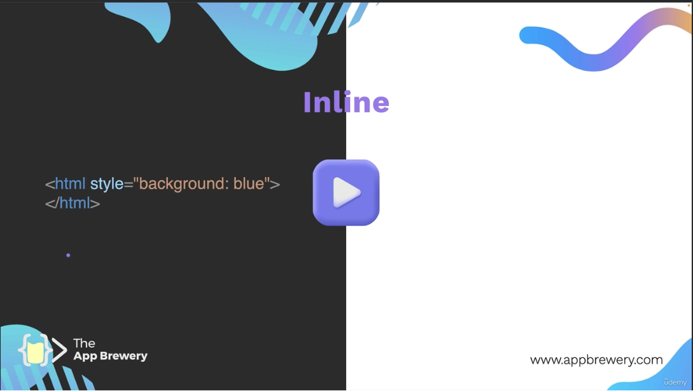
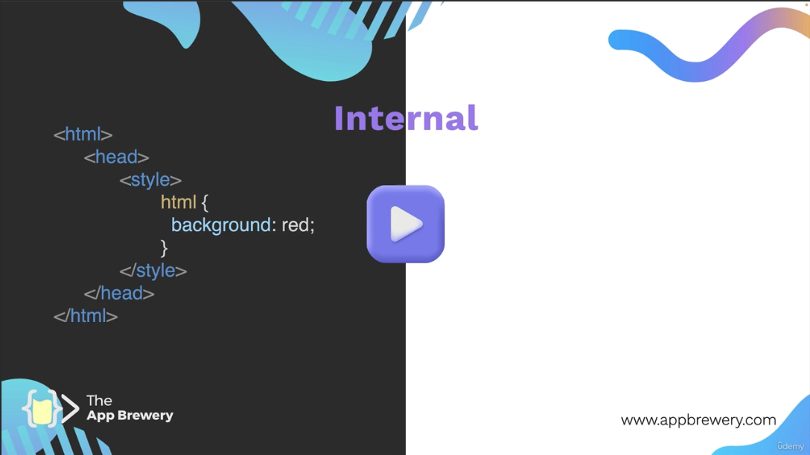

Three Methods of Adding CSS
Example CSS Toggle

Use this when you want to stlye a single element within a HTML document.

Use this when you want to stlye a single HTML document.
Use this when you want to stlye a multiple HTML documents making up a webpage.